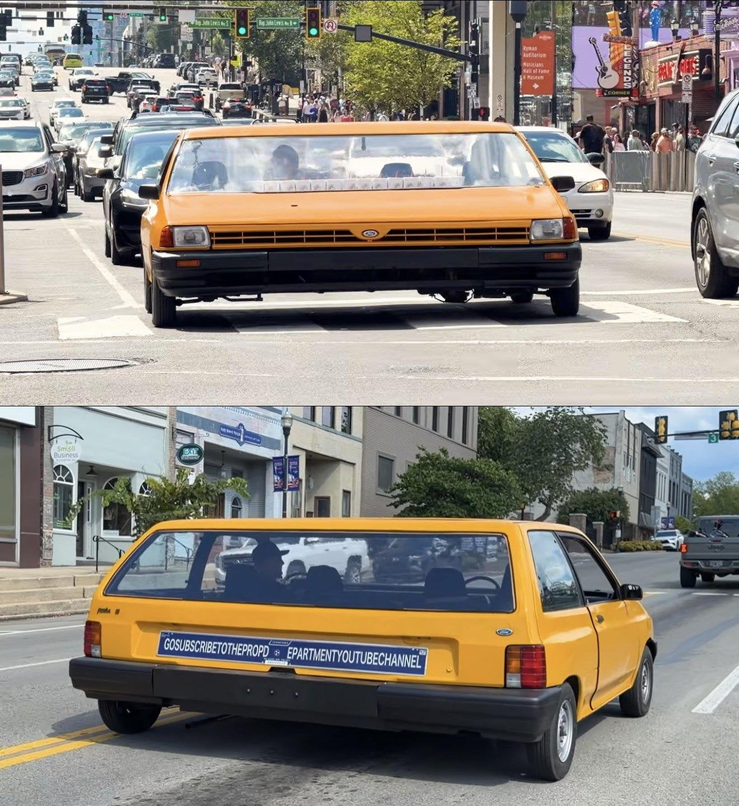
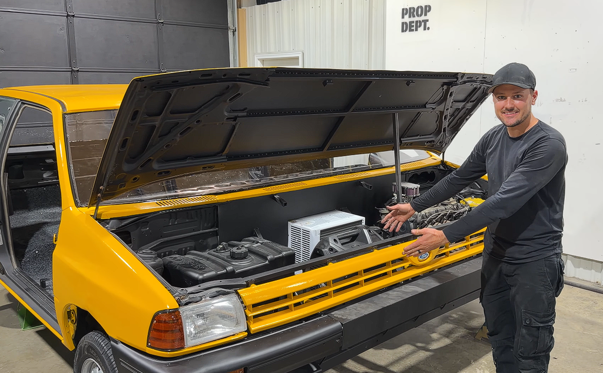
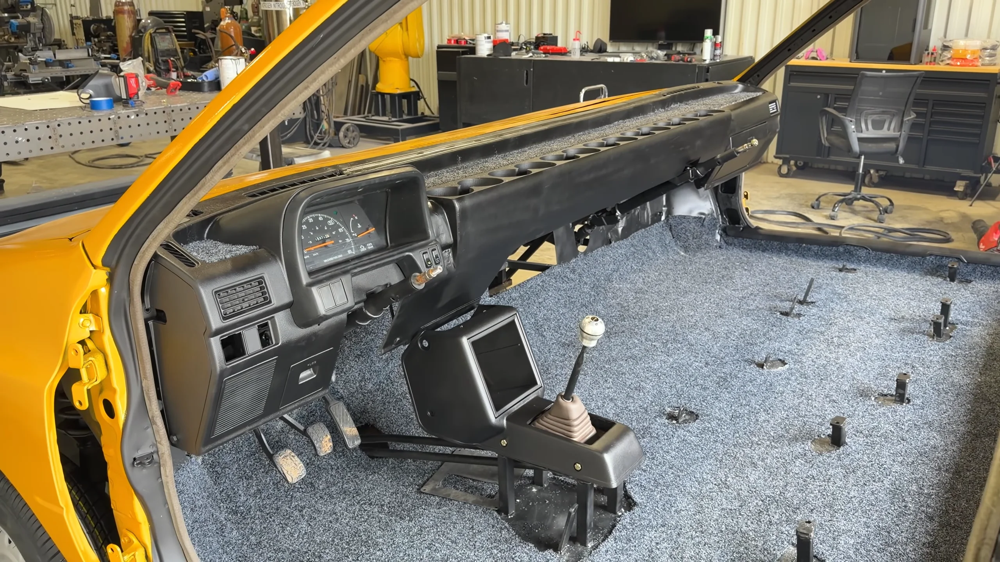
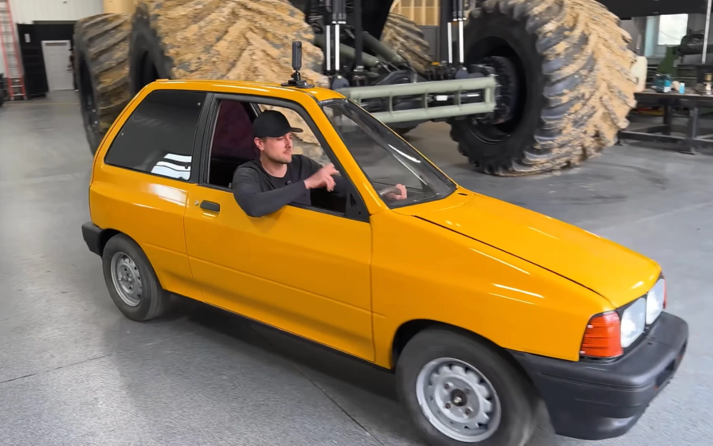

포드 페스티바 차량 3대를 구입해서 좌우로 용접해 이어붙여 너비 10피트(3미터)짜리 차 완성
운전대가 양쪽에 있으며 무려 컵홀더가 14개라고 함
자동차 튜닝법 널널한 미국답게 무려 공도주행도 가능

예전에는 같은 차 기반으로 가장 얇은 공도주행 가능 차량 기록도 세운 사람



포드 페스티바 차량 3대를 구입해서 좌우로 용접해 이어붙여 너비 10피트(3미터)짜리 차 완성
운전대가 양쪽에 있으며 무려 컵홀더가 14개라고 함
자동차 튜닝법 널널한 미국답게 무려 공도주행도 가능

예전에는 같은 차 기반으로 가장 얇은 공도주행 가능 차량 기록도 세운 사람
프라이드 맞으니까
설계는 마쯔다, 브랜드는 포드, 생산은 기아라는 어마어마한 개족보 차량
저 영상에 사용된 차들도 전부 기아 소하리 공장에서 찍어낸 차들임.
마지막 차 봉누도2에서 봤어 ;
저게 공도 주행 가능한게 신기하네 ㅋㅋ
그냥 정상적으로 굴러만 가면 허가가 나오나
ㅇㅇ 타다 죽으면 니책임 이런 느낌
대신 미국은 신차 법규가 세계에서 제일 빡센걸로 유명함. 순정으로 타고 다니다 문제 생기면 그건 회사 책임이니까.
미국 경찰 바디캠 보면 오토바이 튜닝한 애들 맨날 잡으러다니던데 시발 왜 저건 되냐고 ㅋㅋㅋㅋ
영상 30분 짜린데 경찰이 세우는거 4번 나옴ㅋㅋㅋㅋㅋ
걔네도 정식으로 구조변경 허가받으면 합법임. 그런거 안하고 그냥 개라지에서 뚝딱뚝딱해서 타니까 잡는거임
햐 저런 좋은 튜닝문화는 차문화 발달을 위해서 좋은거 같음. 저런건 배워야해
옆으로 규격이 없나? 차선한 개가 넘잖아
순수 차량의 기계적 안정성만 보고
교통법규 지키는건 니가 알아서 할 일이라 생각하는것같음
미묘하게 차선 하나는 어떻게든 들어오는거 같은데 ㅋㅋㅋ
저게 허가만 받으면 혼자서 돌아다닐수있는 최대치의 사이즈래 ㅋㅋㅋ
더크게만들면 호위차량 붙어야된다고 저렇게만듬
저걸 해준다고?ㅋㅋㅋㅋㅋ
ㅅㅂ 실물로 보면 웃느라 운전 빡셀듯ㅋㅋㅋㅋㅋ
캬 컵홀더 낭낭하네
마지막차 종조이 디고??
볼트 쪼이 너트 쪼이
사장님 사장님! 차가 애기를 낳았습니다!
이건 진짜 AI다. 확실함 ㄹㅇ
14 종류의 음료 킵이 가능하다고?!!
저런 거 뒤지면 혼자 뒤지는게 아닌데 진짜 관대하네


에어컨 새로 다는게 아니라 그냥 미니에어컨을 발전기에 연결해서 본넷에 넣고 용접해버림ㅋㅋㅋㅋㅋ
뭔데 저새끼는 매일 반차를 쓰냐
윗놈은 연차 아닝교
ai짤인줄 알았는데 진짜였네 ㅋㅋㅋ
엔진룸공간이 남네 ㅋㅋㅋ
Gta sa 뭐시기 에디션에서 좌우 와리가리 한거 같다 ㅋㅋ
AI가 아니라고ㅋㅋㅋㅋㅋㅋ
차 ㅈㄴ 잘가네
여담인데 프라이드중에 제일 작은 사이즈는 현행 대한민국 경차규격에 들어옴(엔진이 1.1인가 그래서 경차는 안됨) 그래서 차 3대 갖다 박아도 어떻게든 차선안에 들어가지는거 같은데 미국이라 차선이 좀 더 넓어보이긴 하는것도 있지만 ㅋㅋㅋㅋㅋ
한국의 엔진 스왑 관련 규정은 원래 엔진보다 마력이 높은 동일제조사 엔진이기만 하면 상관이 없는데, 그러면 모닝에 들어가는 1.0 터보 엔진을 달면 경차로 구조변경이 가능하려나?
일본 같은 경우는 경차규격이 360cc이던 시절에 나온 차들에 660cc 엔진을 스왑하면 기준 소급 적용이 안되어 소형차 번호판 달고 다니던데.
존ㄴㄴ나 긴 백미러는 왜 안 달았어
프라아아아아아아아아이드
얊
ㅋㅋㅋㅋㅋ진짜 보면서 개쪼갰네
건강검진 꼭 받으세요!
일단 미국이라 다 되는건 아니고 주마다 다를거임 ㅋㅋㅋㅋ 다른놈은 앞뒤가 바뀐 차 만들더니, 저런거도 만드네
허가가 떨어지는게 더 대단한듯
보는 운전자들 죄다 눈비비면서 지나갈듯 ㅋㅋ
도로전세냇어십새야?

1, 2짤은 무슨 잘못 뽑힌 초기 ai 이미지같네 ㅋㅋㅋㅋㅋㅋ
과격한 레이싱 차 같다
너비 3미터에 컵홀더 14개면 경찰이 안 세울 수가 없지ㅋㅋ 30분 영상에 4번이면 거의 단골
눈앞에서 움직이는걸 보고 있어도 착시현상으로 느껴질거 같다 ㅋㅋㅋㅋㅋㅋㅋ
ㅋㅋ 저거 기아 프라이드랑 똑같은 차잖아